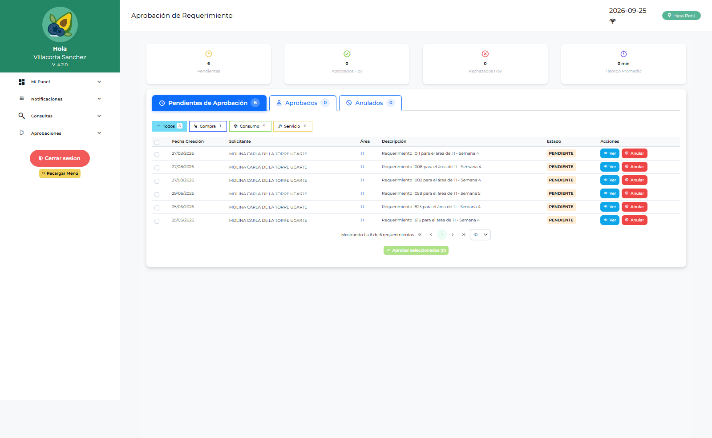

Manual de Usuario — Admin Logística (ADLOGIST)
| Campo | Valor |
|---|---|
| Código de rol | ADLOGIST |
| Nombre | Administrador de Logística (funcional) |
| Pantalla inicial | Dashboard Admin Logística (/main/dashboard-adlogist) |
| Consolas | /administracion (con /admin-login) y /admin-logistica |
| Video tutorial | ../video-tutoriales/VIDEO_TUTORIAL_ADLOGIST.html |
1. ¿Quién eres?
Eres el administrador funcional del módulo. Combinas dos mundos: configuras el sistema (usuarios, áreas, flujos, permisos, menús) y además puedes operar casi todo el flujo logístico (requerimientos, compras, aprobaciones, devoluciones, conformidades).
2. Acceso
- Login de la app → te lleva a Dashboard Admin Logística.
- Consola administrativa:
/admin-logistica/login. - Administración clásica:
/admin-login→/administracion.
3. Tu panel de inicio
Dashboard Admin Logística: resumen de requerimientos, solicitudes, aprobaciones pendientes, usuarios y estado general del módulo.
4. Pantallas disponibles
| Grupo | Pantallas |
|---|---|
| Panel | Dashboards: Admin Logística, Admin Sistema, Logística, Jef. Logística, Jef. Licitaciones, Compras, Finanzas, Operativo, Aprobaciones por Área |
| Configuración | Parámetros, Notificaciones |
| Requerimientos | Requerimientos, Saldo de Requerimiento |
| Compras | Solicitudes de Compra, Consolidación (Req./Compras/Corporativa/Servicios), Cotizaciones, Órdenes de Compra, Solicitudes de Servicio, Órdenes de Servicio, Conformidad de Servicios |
| Almacén | Conformidad de Despacho, Devoluciones de Consumo, Reingresos |
| Aprobaciones | Aprobaciones por Área, Aprobación OC, Aprobación OS |
| Maestros | Ítems, Commodities, Maestro Proveedores, Aprobadores |
| Reportes | Reportes Compras, Requerimientos, Logístico, Aprobaciones Área, Aprobados |
5. Consola /admin-logistica
Ves todas las pestañas igual que TILOGIST, con una diferencia: no puedes crear usuarios con rol TILOGIST.
Pestañas clave para tu gestión:
- Usuarios: crea/edita usuarios de todos los roles excepto TILOGIST.
- Áreas / Usuarios por Área / Flujo Aprobación Área: define qué APLOGIST aprueba cada área.
- Aprobadores: asignación de aprobadores por flujo de OC/OS.
- Permisos por Rol: ajusta las claves
ADMINLG_MENU_*de cada rol. - Empresa / Parámetros / Formato PDF / Plantillas Almacén / Conformidad: configuración funcional.
- Auditoría: trazabilidad.
6. Procedimientos frecuentes
Aprobar un requerimiento por área (cuando cubres a un jefe)
- Menú → Aprobaciones → Aprobaciones por Área.
- Filtra por área/estado, abre el requerimiento.
- Revisa ítems y cantidades → Aprobar o Rechazar con motivo.

Aprobar una Orden de Compra
- Aprobaciones → Aprobación OC.
- Abre la OC, revisa líneas, montos y adjuntos.
- Aprobar o Rechazar con comentario. El estado se refleja en Órdenes de Compra.

Configurar el flujo de aprobación de un área
- Consola
/admin-logistica→ Flujo Aprobación Área. - Selecciona el área, define los niveles y el aprobador (APLOGIST) de cada nivel.
- Guarda y verifica con un requerimiento de prueba.
Crear usuarios operativos
Consola → Usuarios → Nuevo → asigna rol (puedes crear todos excepto TILOGIST).
7. Restricciones
- Sin acceso a pantallas físicas de almacén: Despachos, Recepción, Kardex, Inventario, Listas de Stock, Transferencias, Devoluciones a Proveedores, Evaluación (esas son de ALLOGIST/LOLOGIST).
- No puedes crear usuarios
TILOGIST.
8. Problemas comunes
| Problema | Solución |
|---|---|
| Necesito ver un despacho | Pide acceso a un usuario ALLOGIST/LOLOGIST o usa reportes |
| Un aprobador no ve pendientes | Verifica en Usuarios por Área que esté asignado al área correcta |
| Menú incompleto | Revisa ITEMS_VISIBLES/MENU_JSON del rol en BD |